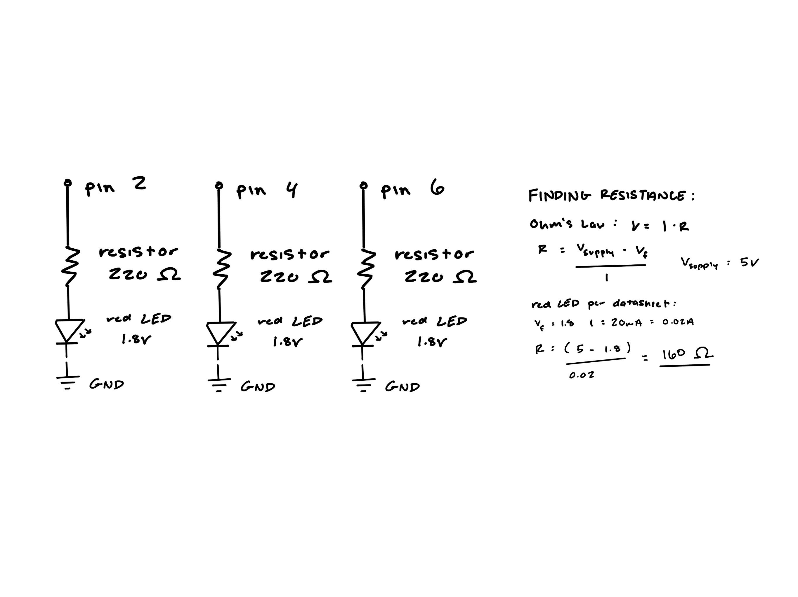
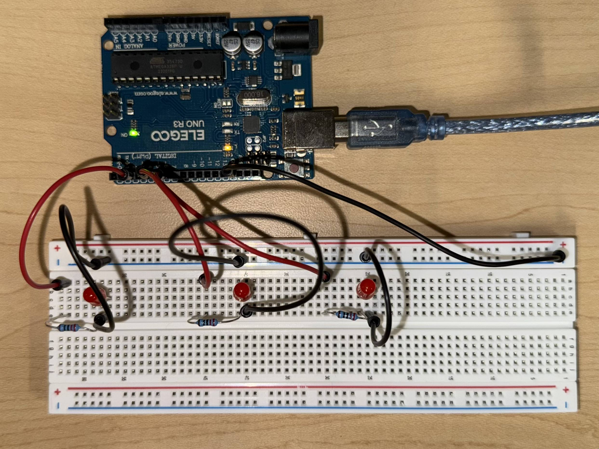
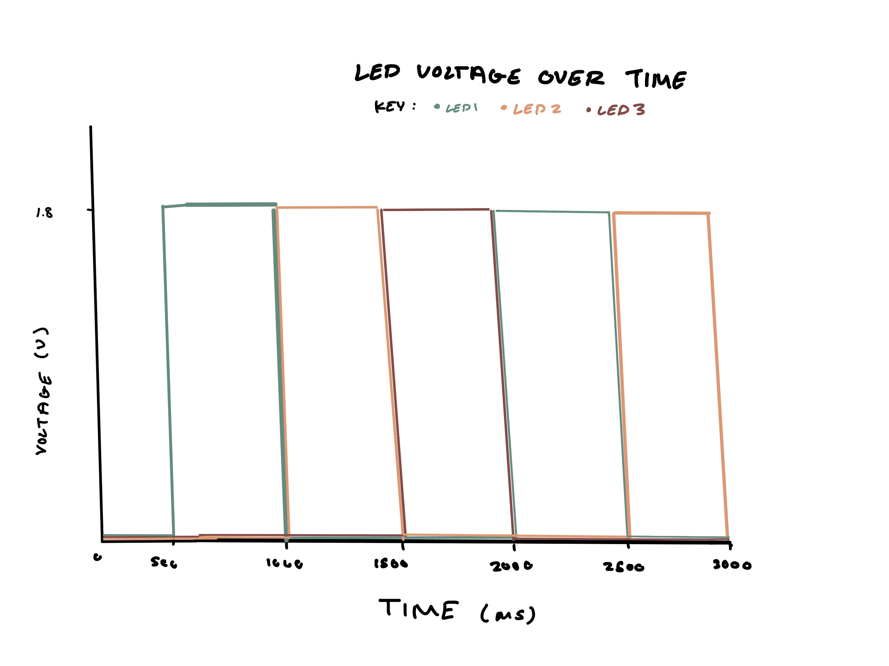

My A1 circuit operation that blinks three red LEDs individually; each LED is on for 500ms then turns off. I chose 500ms to create a smooth blinking pattern to observe.
My A1 circuit operation that blinks three red LEDs individually; each LED is on for 500ms then turns off. I chose 500ms to create a smooth blinking pattern to observe.

The schematic for the circuit I made that ensures there's three independent LEDs that blink on and off. Through reading the datasheet for red LEDs and calculating resitance through Ohm's Law, I determined that a 220 ohm resistor would be best to ensure the LED's longevity and brightness.

For the circuit I made sure that each LED was connected to their own respective pin and also had their own resistor to ensure that the circuit was protectively functional.
int led1 = 2; //led1 connects to pin 2
int led2 = 4; //led2 connects to pin 4
int led3 = 6; //led3 connects to pin 6
int timer = 500; //determines how long the led stays on (milliseconds)
void setup() {
pinMode(led1, OUTPUT); //intializes led1 as output
pinMode(led2, OUTPUT); //intializes led2 as output
pinMode(led3, OUTPUT); //intializes led3 as output
}
void loop() {
for (int i = 1; i <= 3; i++) { //loops through each led
if (i == 1) { //check if led1 is selected
digitalWrite(led1, HIGH); //turns on led1
delay(timer); //led1 is on until desired time
digitalWrite(led1, LOW); //turns off led1
}
if (i == 2) { //check if led2 is selected
digitalWrite(led2, HIGH); //turns of led2
delay(timer); //led2 is on until desired time
digitalWrite(led2, LOW); //turns off led2
}
if (i == 3) { //check if led3 is selected
digitalWrite(led3, HIGH); //turns on led3
delay(timer); //led3 is on until desired time
digitalWrite(led3, LOW); //turns off led3
}
}
}
The written code for my circuit operation. I used for loops and if statements to ensure that each LED was turned on and off in a sequence.
1. Each LED line would alternate sequentially, as when one LED is on at 1.8V the other two would be off at 0V.

2. With the circuit board being only able to safely provide a current of 200mA, and each LED requiring 20mA, the maximum number of LEDs that could be safely blinked independently powered would be 10 LEDs. Technically you conect 14 LEDs in total to the board but the LEDs would be dimmed due to insuffiecient current.
3. The National Insitutes of Health (NIH) says that the human eye can detect flickering up to about 50-90 Hz. This means that an LED would need to blink that quickly (50-90x a second) to appear as if it is steadily on.
4. Yes, I used AI when trying to figure out how to show the code snippet effectively.